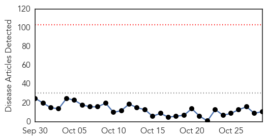
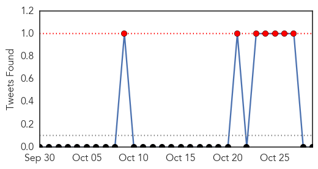
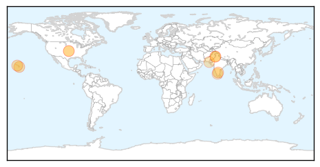

Unknown
30-Day Web Trend
0 alerts, 0 warnings

30-Day Twitter Trend
0 alerts, 0 warnings

Article Locations

Article Confidences

Top Articles:
- 0.998
- Korea to delay declaring itself MERS-free
- 0.997
- DC Health Unit to administer flu shots Friday
- 0.984
- Flu vaccine will be more effective this winter, says Hong Kong's health chief
- 0.973
- Probably cilantro: Over 700 sick from Cyclospora traced to Mexico, travelers edition
- 0.972
- World Health Organization Follows Up Bacon Bummer With This
- 0.970
- Statins “could harm flu fight in pensioners” say studies which claim medicines
- 0.960
- Legionnaires' Disease Outbreak at St. Joseph's Hospital in Syracuse, NY
- 0.957
- Lesson can be learned from BVD outbreak in Germany
- 0.948
- Flu vaccines now available through Humboldt County Department of Health and
- 0.935
- Last year's enterovirus D68 outbreak more widespread than first thought: study
- 0.924
- Fifth NCW person diagnosed with Legionnaires' disease
- 0.900
- Worker Tests Positive For Shigella at Restaurant Linked to...
- 0.895
- Two-thirds of people under 50 have herpes: WHO
- 0.889
- Bacteria at ‘Busta’
- 0.843
- Tuberculosis Deaths Now Rival HIV, Despite Being Curable
- 0.842
- Hospital flu-shot-or-mask policy on hold
- 0.830
- A history of rabies in St. Clair
- 0.827
- Bovine Leukosis Virus
- 0.813
- Worker Tests Positive For Shigella At Mexican Restaurant « CBS San Francisco
- 0.798
- Toronto sees spike in sick raccoons
- 0.788
- Major step towards a vaccine against a lethal disease that kills endangered tortoises
- 0.786
- Neglected area: Centres for psoriasis patients needed
- 0.783
- Australia’s largest ever farm-based outbreak of Q fever
- 0.773
- NBC29 WVIR Charlottesville, VA News, Sports and Weather
- 0.764
- It's Time to Put Teeth in Global Health Practice!
- 0.752
- Swift action to ground pigeon virus
- 0.748
- Health And Family, Lifestyle Features, The Philippine Star
- 0.725
- Sherwin-Williams Develops Bacteria-Killing Paint to Help Fight Hospital Infections
- 0.712
- Zimbabwe runs out of money to contain outbreak of Foot and Mouth disease
- 0.707
- ‘World needs Russia’, former French president Sarkozy tells Putin on Moscow trip
- 0.700
- IMA protests B.Sc course in community health
- 0.695
- Zimbabwe runs out of funds to contain outbreak of Foot and Mouth
- 0.672
- Why hasn't the US eradicated the plague?
- 0.670
- South Korea on alert as 31 hit by mystery illness
- 0.651
- ZIZ Broadcasting Corporation
- 0.649
- Antigua Observer Newspaper
- 0.642
- Republican Paul Ryan elected US House speaker
- 0.630
- At least 60 die daily of TB in Kenya, report reveals
- 0.621
- Doctors Without Borders Urge South Africa to Allow Generic Version of HIV Drugs
- 0.608
- Unity state’s main hospital out of medical supplies - South Sudan
- 0.608
- Unity state’s main hospital out of medical supplies - South Sudan
- 0.603
- Flu Clinics Set for 2015 - Story
- 0.603
- The rise of Turkey’s Demirtas, Erdogan's nemesis
- 0.593
- Flu activity mirroring 2014 where cases spiked in early December
- 0.589
- UNICEF concerned over quake-hit children in Afghan, Pak
- 0.585
- UNICEF Concerned Over Quake-hit Children in Afghan, Pakistan
- 0.582
- Namibia to introduce new polio vaccine in 2016
- 0.580
- TB 'Joins HIV as Most Deadly Infection'
- 0.578
- New ASF outbreaks raise concerns over future of Ukraine pig industry
- 0.566
- US refuses to back down over Assad as Syria talks begin in VIenna
Showing top 50 articles...
Top Tweets:
- 0.900
- MERS hospital outbreak in Hufoof, Saudi Arabia is still growing. Another expat health worker infected & +1 death. https://t.co/Xx6l5Pv6PN
- 0.750
- está en un éxtasis el desgraciado perro jajajaja
- 0.553
- RT: Yo siempre optaré por creer en la gente, so pena de equivocarme.
- 0.543
- RT: Todo Laberinto tiene una salida. Pero el que quiere entrar a un Laberinto en realidad está buscando perderse.
- 0.528
- AFD blog `JID: Statins & Flu Vaccine Effectiveness' https://t.co/f4ahe1kvN4
Dengue Fever
30-Day Web Trend
0 alerts, 0 warnings

30-Day Twitter Trend
2 alerts, 3 warnings

Article Locations
Article Confidences

Top Articles:
- 0.995
- Hawaii News and Island Information
- 0.970
- State investigating two possible dengue fever cases on Big Islan
- 0.945
- Government Says 3,000 Dengue Cases, Doctors Say 56,000
- 0.917
- Dengue whiff in death
- 0.913
- What's The Scariest Halloween Costume Of Them All?
- 0.906
- Dengue again
- 0.802
- Dengue mosquitoes spotted in City panic citizens
- 0.785
- 20-day dengue fumigation drive kicks off on Friday
- 0.724
- Tamil Nadu govt has failed to curb spread of dengue: Karunanidhi
- 0.624
- American Academy of Pediatrics: Global warming is going to kill your kids
- 0.543
- Indrani doesn’t have dengue, discharged from hospital
Top Tweets:
- 0.698
- Flavivirus news: Dengue Cell ill-equipped, Karachi unprepared to combat spread of virus - Geo N... https://t.co/Kl8dWEgExW pathogenposse